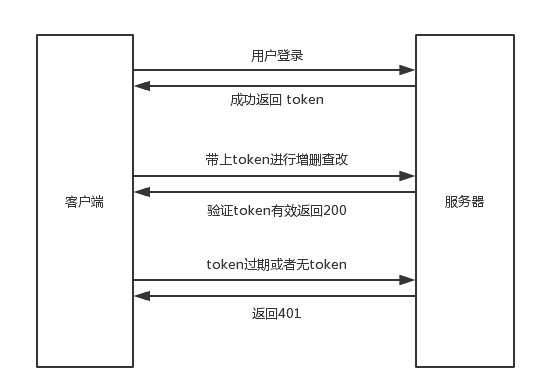
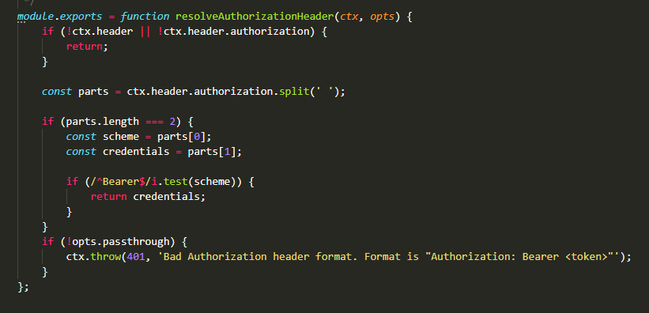
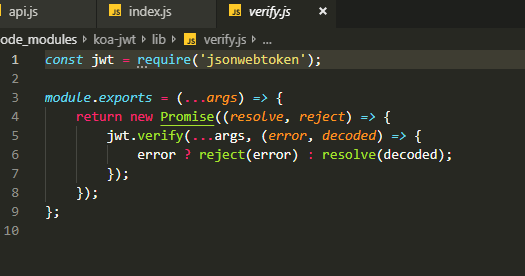

大体思路
后端书写REST api时，有一些api是非常敏感的，比如获取用户个人信息，查看所有用户列表，修改密码等。如果不对这些api进行保护，那么别人就可以很容易地获取并调用这些 api 进行操作。
所以对于一些api，在调用之前，我们在服务端必须先对操作者进行“身份认证”，这就是所谓的鉴权。
Json Web Token 简称为 JWT，它定义了一种通信双方之间以 JSON 对象的形式安全传递信息的方法。JWT 可以使用 HMAC 算法或者是 RSA 的公钥密钥对进行签名，复杂度较高，换来的是更可靠的安全系数。
整个认证的流程大体如下：

首先用户登录的接口是不用token认证的，因为这个接口本身就是token的产生来源。前端输入用户名和密码后请求服务器登录接口，服务器验证用户名密码正确后，生成token并返回给前端，前端存储token，并在后面的请求中把token带在请求头中传给服务器，服务器验证token有效，才可以进行下一步操作。
服务器生成token
由于我们的服务端使用 Koa2 框架进行开发，除了要使用到 jsonwebtoken 库之外，还要使用一个 koa-jwt 中间件，该中间件针对 Koa 对 jsonwebtoken 进行了封装，使用起来更加方便。
const router = require('koa-router')();
const jwt = require('jsonwebtoken');
const userModel = require('../models/userModel.js');
router.post('/login', async (ctx) => {
const data = ctx.request.body;const result = await userModel.findOne({
name: data.name,
password: data.password
})
if(result !== null){
const token = jwt.sign({
name: result.name,
_id: result._id
}, 'zhangnan', { expiresIn: '2h' });
return ctx.body = {
code: 200,
token: token,
msg: '登录成功'
}
}else{
return ctx.body = {
code: 400,
token: null,
msg: '用户名或密码错误'
}
}
});
module.exports = router;（注意：这里暂时不讨论加盐加密校验，实际项目中密码不可能这样明文验证，这里只是为了着重讨论token鉴权。在验证了用户名密码正确之后，就可以调用 jsonwebtoken 的 sign() 方法来生成token，接收三个参数，第一个是载荷，用于编码后存储在 token 中的数据，也是验证 token 后可以拿到的数据；第二个是密钥，自己定义的，随便写个什么单词都可以，但是验证的时候一定要相同的密钥才能解码；第三个是options，可以设置 token 的过期时间。）
前端获取token
接下来就是前端获取 token，这里是在 vue.js 中使用 axios 进行请求，请求成功之后拿到 token 保存到 localStorage 中。
submit(){
axios.post('/login', {
name: this.username,
password: this.password
}).then(res => {
if(res.code === 200){
localStorage.setItem('token', res.data.token);
}else{
this.$message('登录失败')
}
})
}然后前端在请求后端api时，就把 token 带在请求头中传给服务器进行验证。每次请求都要获取 localStorage 中的 token，这样很麻烦，这里使用了 axios 的请求拦截器，进行全局设置，对每次请求都进行了取 token 放到 headers 中的操作。
axios.interceptors.request.use(config => {
const token = localStorage.getItem('token');
config.headers.common['Authorization'] = 'Bearer ' + token;
return config;
})（这段代码，如果是vue项目，可以直接放在main.js中设置，表示每次请求前都会往请求头的authorization里塞一个token，至于那个Bearer 是koa-jwt的一个标识单词，方便解析）
接下来服务器收到前端发过来的token后，就可以进行验证。
const koa = require('koa');
const koajwt = require('koa-jwt');
const app = new koa();
app.use(koajwt({
secret: 'zhangnan'
}).unless({
path: [/\/register/, /\/login/]
}));（在这里没有定义错误处理函数，由于出现错误后会返回401，所以我直接就让前端来处理这种异常情况，给出一个错误的交互提示即可）
分析koa-jwt源码
我们在node_mudules里面找到koa-jwt/lib/resolvers文件夹下的auth-header.js文件，看下koa-jwt做了些什么

（可以看到它是先判断请求头中是否带了 authorization，如果有，则通过正则将 token 从 authorization 中分离出来，这里我们也看到了Bearer这个单词。如果没有 authorization，则代表了客户端没有传 token 到服务器，这时候就抛出 401 错误状态。）
再看看上一级的vertify.js。

（可以看到在 verify.js 中，它就是调用 jsonwebtoken 原生提供的 verify() 方法进行验证返回结果。jsonwebtoken 的 sign() 方法用于生成 token ，而 verify() 方法当然则是用来解析 token。属于jwt配对生产的两个方法，所以koa-jwt这个中间件也没做什么事，无非就是用正则解析请求头，调用jwt的vertify方法验证token，在koa-jwt文件夹的index.js中，koa-jwt还调用koa-unless进行路由权限分发）
以上就是json web token的大体流程。